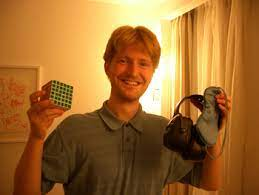

Personas famosas
con el cubo de Rubik
Inicio
A continuación se muestra una lista de celebridades que saben armar el
cubo de rubik:
- Will Smith: El reconocido actor Will Smith es conocido por su
habilidad para resolver el cubo de Rubik. Ha mostrado sus habilidades en
varias ocasiones en programas de televisión y entrevistas.
- Justin Bieber: El cantante y compositor Justin Bieber ha compartido en
sus redes sociales videos resolviendo el cubo de Rubik de manera rápida
y fluida. Ha demostrado su destreza en este rompecabezas.
- Ed Sheeran: El exitoso músico Ed Sheeran es otro famoso que ha
exhibido su habilidad para resolver el cubo de Rubik. Ha sido visto en
entrevistas y eventos manipulando y resolviendo el cubo con facilidad.
- Chris Hardwick: Presentador de televisión y comediante, es conocido
por su afición por el cubo de Rubik. Ha compartido en diversas ocasiones
su talento para resolverlo en tiempo récord.

- Macklemore: El rapero y cantante Macklemore también es conocido por su
destreza con el cubo de Rubik. Ha mostrado su habilidad en videos y
entrevistas, resolviendo el cubo de manera rápida y precisa.